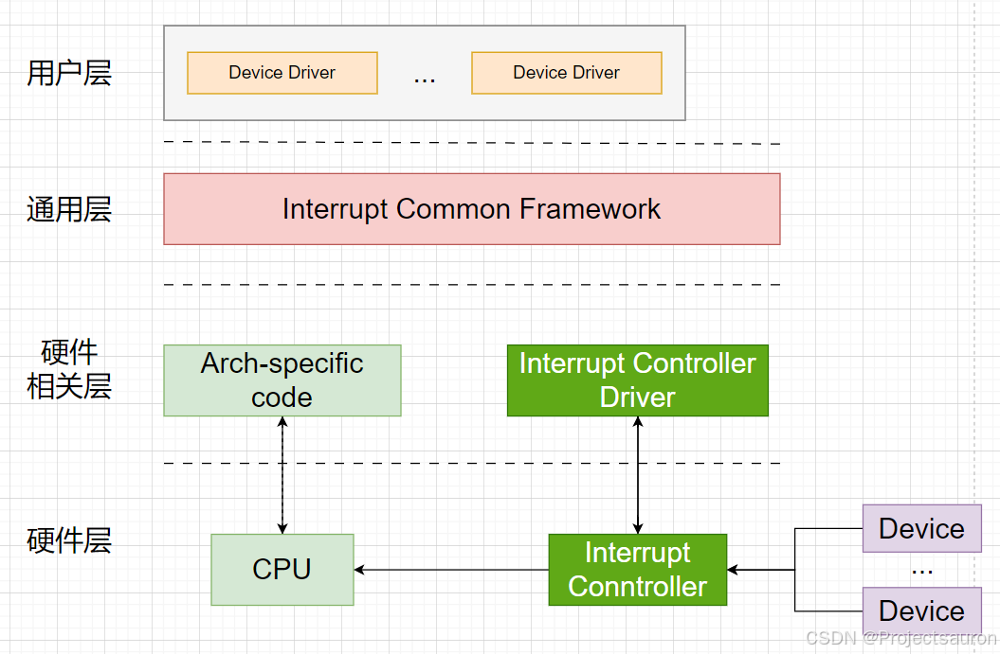
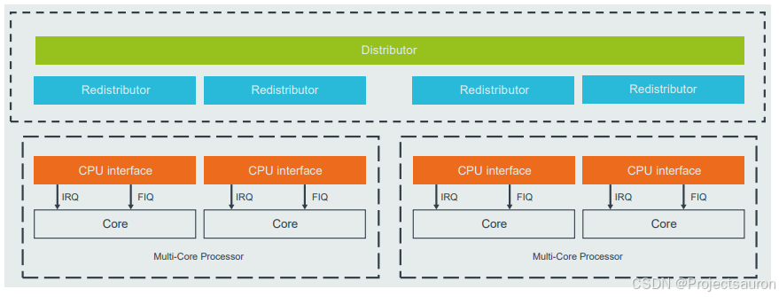
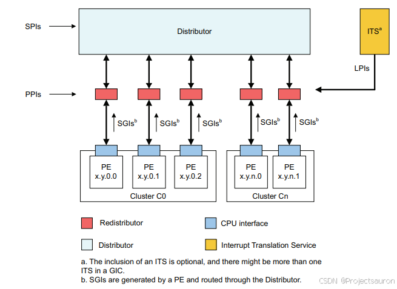
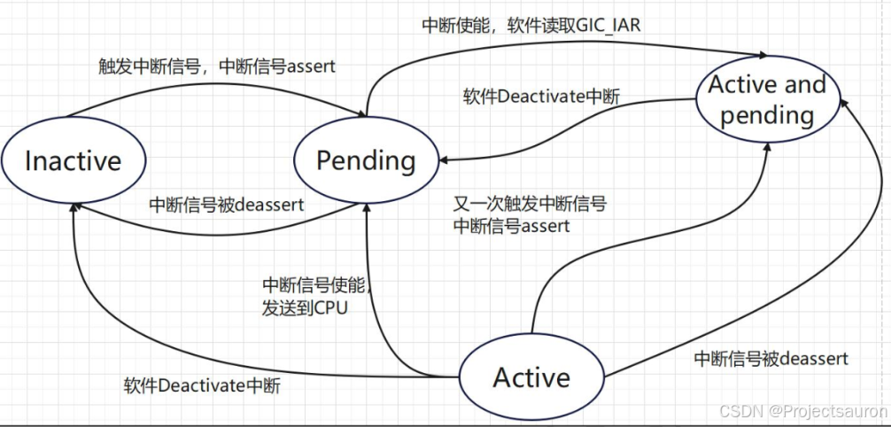
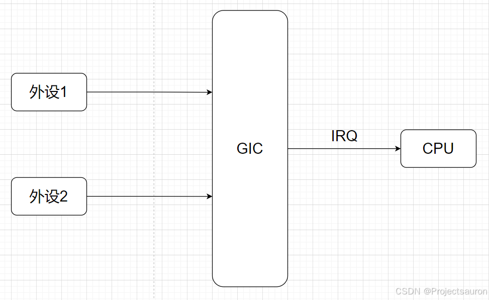
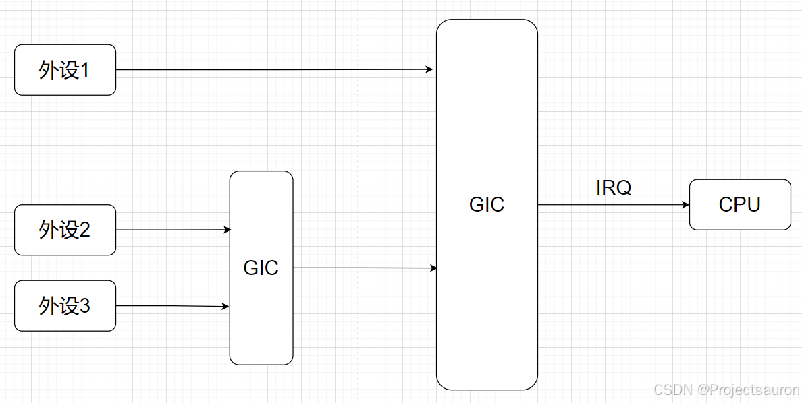

Linux 中断机制（二）之中断子系统框架
[toc]
一、概述
一个完整的中断子系统框架可以分为四个层次， 由上到下分别为：用户层、 通用层、 硬件相关层和硬件层， 每个层相关的介绍如下所示：
- 用户层：用户层是中断的使用者，主要包括各类设备驱动。 这些驱动程序通过中断相关的接口进行中断的申请和注册。 当外设触发中断时， 用户层驱动程序会进行相应的回调处理，执行特定的操作。
- 通用层：通用层也可称为框架层，它是硬件无关的层次。 通用层的代码在所有硬件平台上都是通用的，不依赖于具体的硬件架构或中断控制器。 通用层提供了统一的接口和功能， 用于管理和处理中断， 使得驱动程序能够在不同的硬件平台上复用。
- 硬件相关层：硬件相关层包含两部分代码。 一部分是与特定处理器架构相关的代码，比如 ARM64 处理器的中断处理相关代码。 这些代码负责处理特定架构的中断机制， 包括中断向量表、 中断处理程序等。 另一部分是中断控制器的驱动代码， 用于与中断控制器进行通信和配置。这些代码与具体的中断控制器硬件相关。
- 硬件层：硬件层位于最底层， 与具体的硬件连接相关。 它包括外设与 SoC（系统片上芯片）的物理连接部分。 中断信号从外设传递到中断控制器， 由中断控制器统一管理和路由到处理器,硬件层的设计和实现决定了中断信号的传递方式和硬件的中断处理能力。

二、中断控制器 GIC
中断控制器（Interrupt Controller）是中断子系统框架硬件中的一个关键组件，用于管理和分发系统中的中断信号。其中，GIC（Generic Interrupt Controller）是一种通用的中断控制器，常用于 ARM 架构的处理器系统中。
不同的架构有不同的中断控制器，STM32 中的中断控制器叫做 NVIC，ARM 架构中的中断控制器一般为 GIC。
GIC 的主要功能是接收来自各种外部设备或内部事件的中断请求，并根据优先级和预设规则，将这些中断请求分发给相应的中断处理器或 CPU 核心。GIC 通常包含多个中断输入通道和多个中断输出通道，以支持多个设备同时触发中断。
GIC采用了多级中断架构，其中包括SGI（Software Generated Interrupts）、PPI（Private Peripheral Interrupts）和 SPI（Shared Peripheral Interrupts）等级别的中断。SGI 是由软件产生的中断，PPI 是针对单个处理器核心的私有中断，SPI 是针对多个处理器核心的共享中断。
每个 GIC 版本及相应特性如下表所示：
| 版本 | 关键特性 | 常用核心 |
|---|---|---|
| GICV1 | 支持最多八个处理器核心(PE) 支持最多 1020 个中断 ID |
ARM Cortex-A5 MPCore ARM Cortex-A9 MPCore ARM Cortex-R7 MPCore |
| GICV2 | GICv1 的所有关键特性 支持虚拟化 |
ARM Cortex-A7 MPCore ARM Cortex-A15 MPCore ARM Cortex-A53 MPCore ARM Cortex-A57 MPCore |
| GICV3 | GICv2 的所有关键特性 支持超过 8 个处理器核心 支持基于消息的中断 支持超过 1020 个中断 ID CPU 接口寄存器的系统寄存器访问 增强的安全模型，分离安全和非安全的 Group1中断 |
ARM Cortex-A53 MPCore ARM Cortex-A57 MPCore ARM Cortex-A72 MPCore |
| GICV4 | GICv3 的所有关键特性 虚拟中断的直接注入 |
ARM Cortex-A53 MPCore ARM Cortex-A57 MPCore ARM Cortex-A72 MPCore |
下面以 GICV3 讲解其结构功能，GIC V3.0 逻辑图组成如下所示：


GIC 中断控制器可以分为 Distributor 接口、Redistributor 接口 和 CPU 接口，下面是每个部分的说明：
1、Distributor 接口
Distributor（中断仲裁器）用于 SPI（Shared peripheral interrupts）中断的管理，具有仲裁和分发的作用，会将中断发送给 Redistributor。
Distributor 提供了一些编程接口或者说是寄存器，我们可以通过 Distributor 的编程接口实现如下操作。下面是Distributor 主要功能：
- 启用和禁用 SPI。
- 设置每个 SPI 的优先级级别。
- 每个 SPI 的路由信息。
- 将每个 SPI 设置为电平触发或边沿触发,生成基于消息的 SPI。
- 控制 SPI 的活动和挂起状态。
- 用于确定在每个安全状态中使用的程序员模型的控制（亲和性路由或遗留模型）。
2、Redistributor 接口
GICv3 中，Redistributor（重新分配器） 管理 SGI，PPI，LPI 中断，然后将中断发送给 CPU 接口，包括下面功能：
- 启用和禁用 SGI（软件生成的中断）和 PPI（处理器专用中断）设置 SGI 和 PPI 的优先级级别。
- 将每个 PPI 设置为电平触发或边沿触发。
- 将每个 SGI 和 PPI 分配给一个中断组。
- 控制 SGI 和 PPI 的状态。
- 对支持关联 LPI（低功耗中断）的中断属性和挂起状态的内存中的数据结构进行基址控制。
- 支持与连接的处理器核心的电源管理。
3、CPU 接口
CPU 接口为链接到 GIC 的处理器提供接口，与 Distributor 类似它也提供了一些编程接口，我们可以通过 CPU 接口实现以下功能：
- 通用控制和配置，用于启用中断处理。
- 确认中断。
- 执行中断的优先级降低和停用。
- 为处理器核心设置中断优先级屏蔽。
- 定义处理器核心的抢占策略。
- 确定处理器核心最高优先级的挂起中断。
三、中断类型
GIC-V3 支持四种类型的中断，分别是 SGI、PPI、SPI 和 LPI，每个中断类型的介绍如下：
- SGI（Software Generated Interrupt，软件生成中断）:
SGI是通过向GIC中的SGI 寄存器写入来生成的中断。 该类型中断并没有实际的物理连线，而是由软件通过写寄存器方式触发，它只支持边沿触发。它通常用于处理器之间的通信， 允许一个 PE 发送中断给一个或多个指定的 PE， 中断号 ID0-ID15 用于SGI。 - PPI（Private Peripheral Interrupt， 私有外设中断）: 针对特定 PE 的外设中断。 不与其他 PE 共享，因为
PPI是 PE 私有的，所以每个 PE 都可以使用相同一段范围的PPI。因为PPI是 PE 私有的，所以每个 PE 都可以使用相同一段范围的PPI。中断号 ID16-ID31 用于PPI。 - SPI（Shared Peripheral Interrupt，共享外设中断）：全局外设中断，可以路由到指定的 PE 或一组 PE， 它允许多个 PE 接收同一个中断。
SPI由设备连接至Distributor中断控制器的硬件中断连线触发。该类型中断不与特定的 CPU 绑定，可以根据affinity配置被路由到任意 CPU 或一组特定的 CPU 上。中断号 ID32-ID1019 用于SPI。 - LPI（Locality-specific Peripheral Interrupt，特定局部外设中断）：
LPI是 GICv3 中引入的一种中断类型与其他类型的中断有几个不同之处。LPI总是基于消息的中断，也称作基于内存地址的中断， 由外设写一个内存地址产生，这个内存地址一般映射至 GIC ITS 内部的translator寄存器。ITS接收外设写入的数据后进行翻译，然后再向特定redistributor产生一个中断。其配置存储在内存表中， 而不是寄存器中。
| INTID 范围 | 中断类型 | 备注 |
|---|---|---|
| 0 - 15 | SGI（软件生成中断） | 每个核心分别存储 |
| 16 - 31 | PPI（私有生成中断） | 每个核心分别存储 |
| 32 - 1019 | SPI（共享外设中断） | |
| 1020 - 1023 | 特殊中断号 | 用于表示特殊情况 |
| 1024 - 8191 | 保留 | |
| 8192 及更大 | LPI（特定局部外设中断） | 上限由实现定义 |

- Inactive（非活动状态）：中断源当前未被触发。
- Pending（等待状态）：中断源已被触发，但尚未被处理器核心确认。
- Active（活动状态）：中断源已被触发，并且已被处理器核心确认。
- Active and Pending（活动且等待状态）：已确认一个中断实例， 同时另一个中断实例正在等待处理。
每个外设中断可以是以下两种类型之一：
- 边沿触发（Edge-triggered）
这是一种在检测到中断信号上升沿时触发的中断，然后无论信号状态如何，都保持触发状态，直到满足本规范定义的条件来清除中断。 - 电平触发（Level-sensitive）
这是一种在中断信号电平处于活动状态时触发的中断， 并且在电平不处于活动状态时取消触发。
中断类型控制：
GICV3 支持通过软件控制中断的状态，如将某个中断设置为 pending 状态、active 状态或清除其 pending、active 状态。它可以通过配置以下几个寄存器实现：
| 寄存器 | 功能 |
|---|---|
| GICD_SETSPI_NSR | 设置特定的 non secure 中断的 pending 状态。 若该中断当前为 inactive 状态，则转换为 pending 状态。 若当前为 pending 状态，则转换为 pending and active 状态 |
| GICD_CLRSPI_NSR | 清除特定 non secure 中断的 pending 状态 |
| GICD_SETSPI_SR | 设置特定的 secure 中断的 pending 状态。 若该中断当前为 inactive 状态，则转换为 pending 状态。若当前为 pending 状态，则转换为 pending and active 状态 |
| GICD_CLRSPI_SR | 清除特定 secure 中断的 pending 状态 |
| GICD_ISPENDR |
设置一个或一组中断为 pending 状态。 若该中断当前为 inactive 状态，则转换为 pending 状态。 若当前为 pending 状态，则转换为 pending and active 状态。 该寄存器的每一个 bit 代表一个中断号 |
| GICD_ICPENDR |
清除一个或一组中断为 pending 状态，该寄存器的每个 bit 代表一个中断号 |
| GICD_ISACTIVE |
设置一个或一组中断为 active 状态。 若该中断当前不处于 active 状态，则转换为 active 状态。 若当前为 active 状态，则该操作被忽略。 该寄存器的每一个 bit 代表一个中断号 |
| GICD_ICACTIVE |
清除一个或一组中断为 active 状态。 该寄存器的每一个 bit 代表一个中断号 |
四、中断号
在 Linux 内核中， 我们使用 IRQ number 和 HW interrupt ID 两个 ID 来标识一个来自外设的中断：
- IRQ number：CPU 需要为每一个外设中断编号，我们称之
IRQ Number。 这个IRQ number是一个虚拟的interrupt ID，和硬件无关，仅仅是被 CPU 用来标识一个外设中断。 - HW interrupt ID：对于 GIC 中断控制器而言，它收集了多个外设的
interrupt request line并向上传递，因此， GIC 中断控制器需要对外设中断进行编码。 GIC 中断控制器用HW interrupt ID来标识外设的中断。 如果只有一个 GIC 中断控制器， 那IRQ number和HW interrupt ID是可以一一对应的，如下图所示:

但如果是在 GIC 中断控制器级联的情况下， 仅仅用 HW interrupt ID 就不能唯一标识一个外设中断， 还需要知道该 HW interrupt ID 所属的 GIC 中断控制器（==HW interrupt ID 在不同的 Interrupt controller 上是会重复编码的==）。

五、中断申请函数
1、request_irq 函数
request_irq 函数是在 Linux 内核中用于注册中断处理程序的函数。 它用于请求一个中断号（IRQ number）并将一个中断处理程序与该中断关联起来。下面是对 request_irq 函数的详细介绍：
1 | |
- 参数含义
- irq：要请求的中断号（IRQ number）
- handler：指向中断处理程序的函数指针。
- flags：标志位，用于指定中断处理程序的行为和属性，如中断触发方式、中断共享等。
- name：中断的名称，用于标识该中断。
- dev：指向设备或数据结构的指针，可以在中断处理程序中使用。
- 返回值:
- 成功：0 或正数，表示中断请求成功。
- 失败：负数，表示中断请求失败，返回的负数值表示错误代码，
下面是常用的标志：
| 标志 | 描述 |
|---|---|
| IRQF_SHARED | 多个设备共享一个中断线，共享的所有中断都必须指定此标志。如果使用共享中断的话， request_irq 函数的 dev 参数就是唯一区分他们的标志 |
| IRQF_ONESHOT | 单次中断，中断执行一次就结束 |
| IRQF_TRIGGER_NONE | 无触发 |
| IRQF_TRIGGER_RISING | 上升沿触发 |
| IRQF_TRIGGER_FALLING | 下降沿触发 |
| IRQF_TRIGGER_HIGH | 高电平触发 |
| IRQF_TRIGGER_LOW | 低电平触发 |
2、request_threaded_irq() 函数
中断线程化的作用与工作队列类似，先在中断处理函数中处理重要紧急的任务，然后使用线程来处理耗时复杂的任务。函数原型如下：
1 | |
与 request_irq() 函数相比 request_threaded_irq() 函数仅多了一个入参 thread_fn，thread_fn() 为在线程中运行的函数。
3、gpio_to_irq 函数
gpio_to_irq 函数用于将 GPIO 引脚的编号（GPIO pin number）转换为对应的中断请求号（interrupt request
number）。
1 | |
- 参数说明
- gpio：要映射的 GPIO 引脚号。
- 返回值
- 成功：返回值为该 GPIO 引脚所对应的中断号。
- 失败：返回值为负数，表示映射失败或无效的 GPIO 引脚号。
4、free_irq 函数
free_irq 函数用于释放之前通过 request_irq 函数注册的中断处理程序。 它的作用是取消对中断的注册并释放相关的系统资源。下面是关于该函数的详细解释：
1 | |
- 参数说明
- irq：要释放的中断号。
- dev_id：设备标识，用于区分不同的中断请求。它通常是在
request_irq函数中传递的设备特定数据指针。
六、中断服务函数
中断处理程序是在中断事件发生时自动调用的函数。 它负责处理与中断相关的操作， 例如读取数据、 清除中断标志、 更新状态等。
irqreturn_t handler(int irq,void *dev_id) 是一个典型的中断服务函数的函数原型。下面对该函数原型及其参数进行详细解释：
1 | |
handler 函数是一个中断服务函数，用于处理特定中断事件。它在中断事件发生时被操作系统或硬件调用，执行必要的操作来响应和处理中断请求。
- 参数说明
- irq：表示中断号或中断源的标识符。它指示引发中断的硬件设备或中断控制器。
- dev_id：是一个 void 类型的指针，用于传递设备特定的数据或标识符。它通常用于在中断处理程序中区分不同的设备或资源。
- 返回值
- irqreturn_t 是一个特定类型的枚举值，用于表示中断服务函数的返回状态。它可以有以下几种取值：
- IRQ_NONE：表示中断服务函数未处理该中断，中断控制器可以继续处理其他中断请求。
- IRQ_HANDLED：表示中断服务函数已成功处理该中断，中断控制器无需进一步处理。
- IRQ_WAKE_THREAD：表示中断服务函数已处理该中断，并且请求唤醒一个内核线程来继续执行进一步的处理。这在一些需要长时间处理的中断情况下使用。
- irqreturn_t 是一个特定类型的枚举值，用于表示中断服务函数的返回状态。它可以有以下几种取值：
在处理程序中， 通常需要注意以下几个方面：
- 处理程序应该尽可能地快速执行，以避免中断丢失或过多占用 CPU 时间。
- 如果中断源是共享的， 处理程序需要处理多个设备共享同一个中断的情况。
- 处理程序可能需要与其他部分的代码进行同步，例如访问共享数据结构或使用同步机制来保护临界区域。
- 处理程序可能需要与其他线程或进程进行通信，例如唤醒等待的线程或发送信号给其他进程。